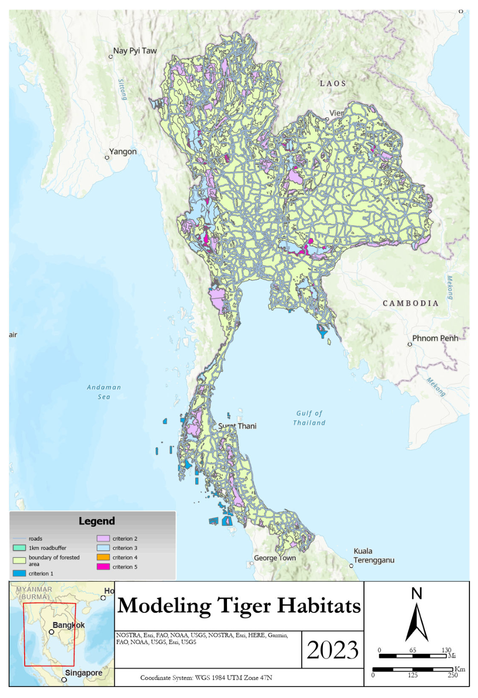

Investigating the spatio-temporal patterns of wildfires in California
Using ArcGis
Goal: Find relationship between fire perimeters and bodies of water in Los Anglees County
Datasets Used:
Wildland-Urban Interface 2020 (Census Block-level WUI data of LA County), Fire Perimeter data, California Counties Population Data, Primary Roads in CA
Methodology + Analysis:
Select by Location
find intersection between” California_Fires_Perimeter” layer and “LA_county” layer → add selected features to new layer on map
Load shapefiles for California Major Rivers and Creeks and California Major Lakes and Reservoirs
Add topographic base map and surrounding counties to make chosen county stand out
Result:
Fires do fall along various rivers and creeks in LA but mostly around San Gabriel Mountains
[insert image about investigating spatio-temporal here]
Modeling Tiger Habitats
Using ArcGis
Goal: Find portions of protected areas, having the best environment to support tigers
Datasets Used:
Boundary, Protect, roads, forest, DEM (76 SRTM 1 Arc-SEcond digital elevation model images within Thailand), Mammals
Methodology + Analysis:
Needed to fulfill 5 criterion:
Suitable habitat cannot be within 1km of a road
Suitable Habitat area must have following combination of preys:
1+ of Sambar or Eld_Deer
Also must not have more than 1 Gaur
The roundness of suitable habitat area(s) should be less than 1800. (Roundness = ratio of area to perimeter or area/perimeter)
Slope of suitable habitat area(s) should be less than 30˚
GIS Tools Utilized:
[criterion 1] Buffer tool for each road and erasing the zone from the protected area
[criterion 2] Select-by-attribute to select only the forest polygons of suitable vegetation types (4 mentioned earlier)
Intersect tool also used to get the portion vegetation types are suitable in criterion 1 and forest
[criterion 3]‘Add join` tool to add information in ‘mammals’ table to ‘protect layer’ [since they both share the same unique Protect_ID]
In new layer select features where sambar or eld_deer is 1 or more
Use intersect to get only data within criterion 2 and info specified above
[criterion 4]New column is made ‘Roundness’ and then ‘calculate field’ tool used to select features with roundness less than 1800 → select-by-attribute
[criterion 5]Mosaic Dataset and add necessary rasters to it → generate slope with slope tool → extract cells w/ slope value less than 30 with Raster Calculator →
convert raster to polygon → intersect tool with criterion 4 and selected slope polygons

Result:
25 features meet all 5 criteria. Tigers are found in mixed deciduous forests out of any forests in Thailand due to resources that forests provide which
can’t be found anywhere else.
Trade and Service Area Analysis of Santa Maria County Gas Stations
Using ArcGis
Goal: Find equal competition trade areas for gas stations in santa barbara
Datasets Used:
SMC Census Block 2010
Gas Station Location Coordinates
Methodology + Analysis:
Use network analyst tool to perform service area analysis based on distance
Outline the trade areas
Load shapefiles for California Major Rivers and Creeks and California Major Lakes and Reservoirs
Add topographic base map and surrounding counties to make chosen county stand out
Result:
polygons that outline that equal competition trade areas